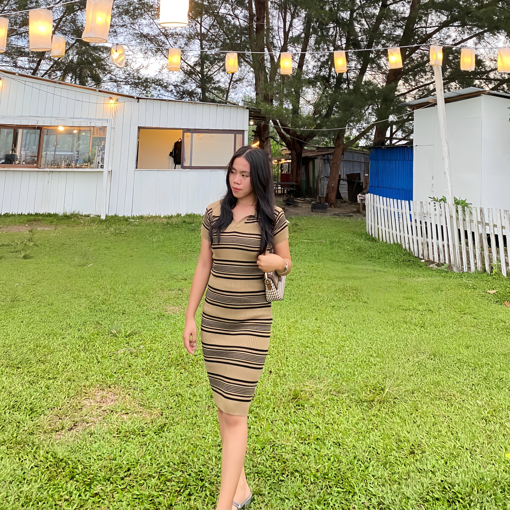
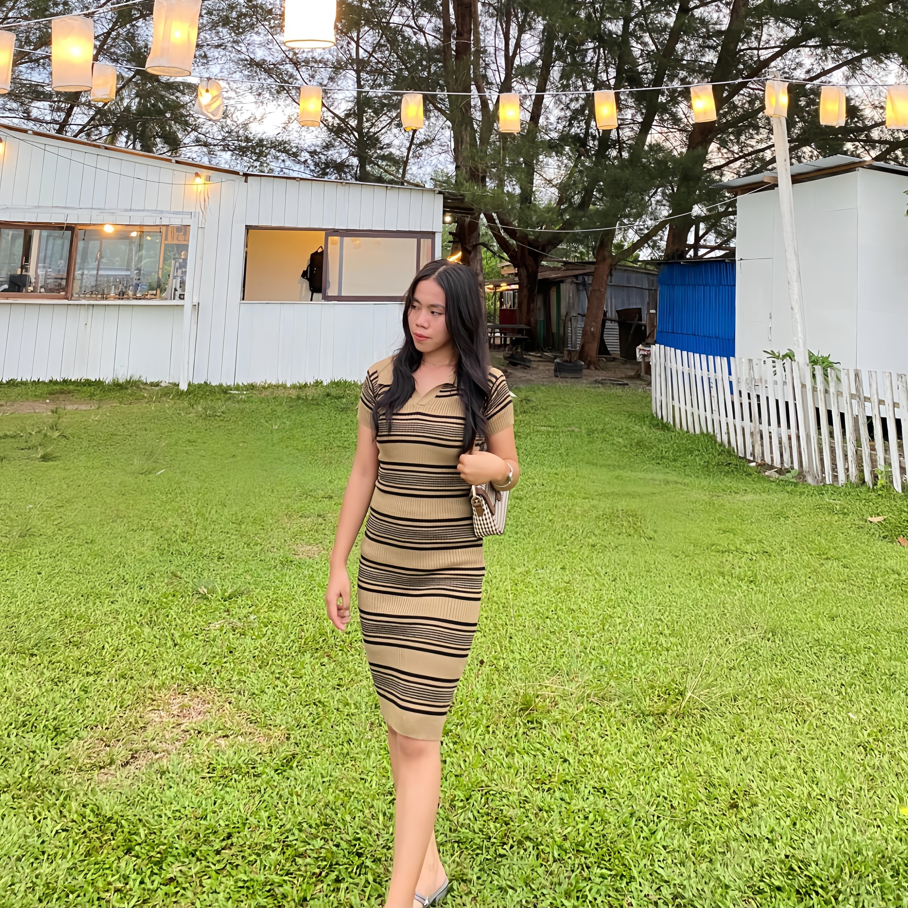

Momen pertama yang selalu terukir.
Sebuah Awal yang Indah
Mungkin terdengar klise, tapi dunia serasa berhenti saat pandangan kita bertemu. Sejak detik itu, aku tahu ada sesuatu yang istimewa yang baru saja dimulai.
Tawa yang Selalu Berharga
Kita telah berbagi tawa hingga perut sakit. Setiap canda dan senyummu membentuk ikatan yang tak akan pernah bisa putus.
Tawamu adalah melodi favoritku.
Jejak Kaki di Setiap Perjalanan
Dari puncak gunung hingga pantai berpasir, setiap jejak langkah kita adalah cerita. Kamu membuat setiap perjalanan terasa seperti pulang ke rumah.
Dalam pelukmu kutemukan ketenangan.
Sebuah Pelukan Hangat
Ketika dunia terasa terlalu bising, pelukanmu adalah tempat paling tenang. Terima kasih telah selalu menjadi sandaran hatiku.
Hal-hal Sederhana
Bukan hanya tentang momen besar, tapi juga saat kita menikmati teh kentel di sore hari atau menonton film hingga larut. Kebahagiaan sederhana bersamamu adalah segalanya.

Setiap momen kecil menjadi berarti.
Menuju Babak Selanjutnya
Ini bukanlah akhir, melainkan awal dari ribuan halaman baru yang akan kita tulis bersama. Aku tidak sabar untuk melihat ke mana takdir akan membawa kita berdua.